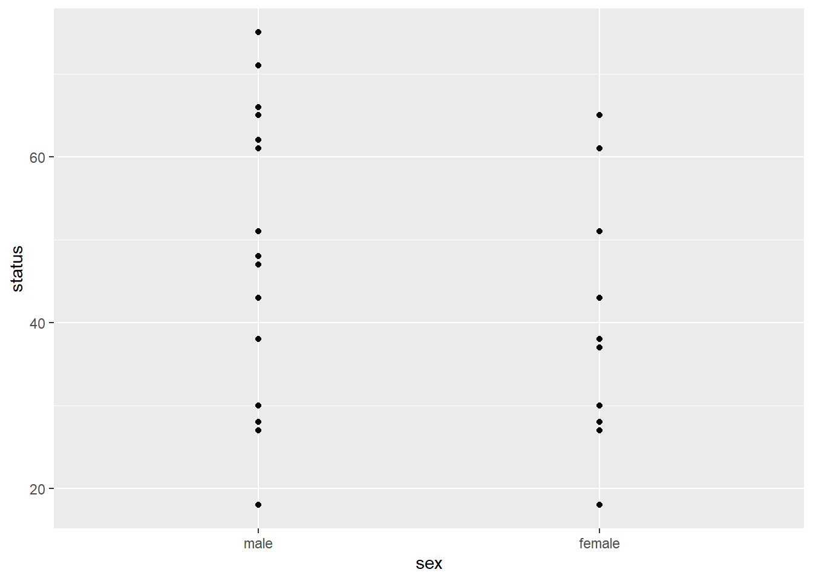
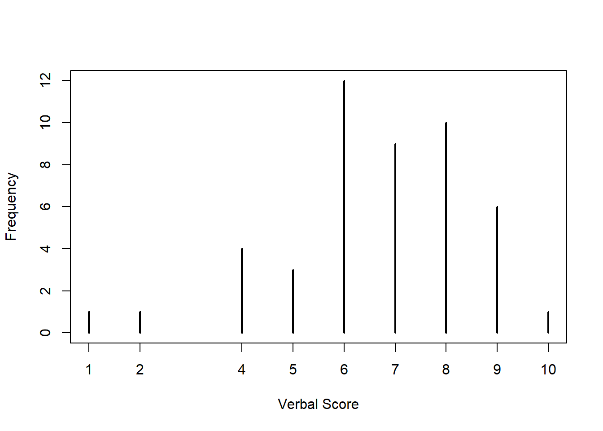
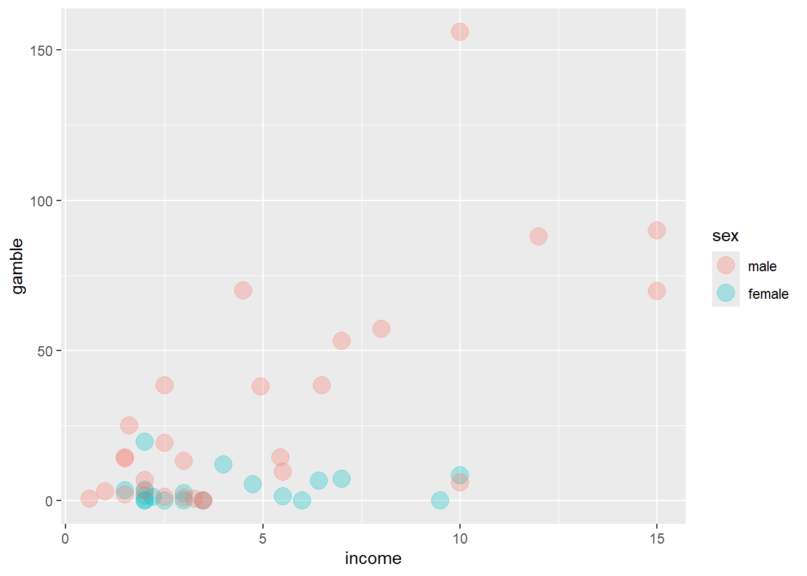
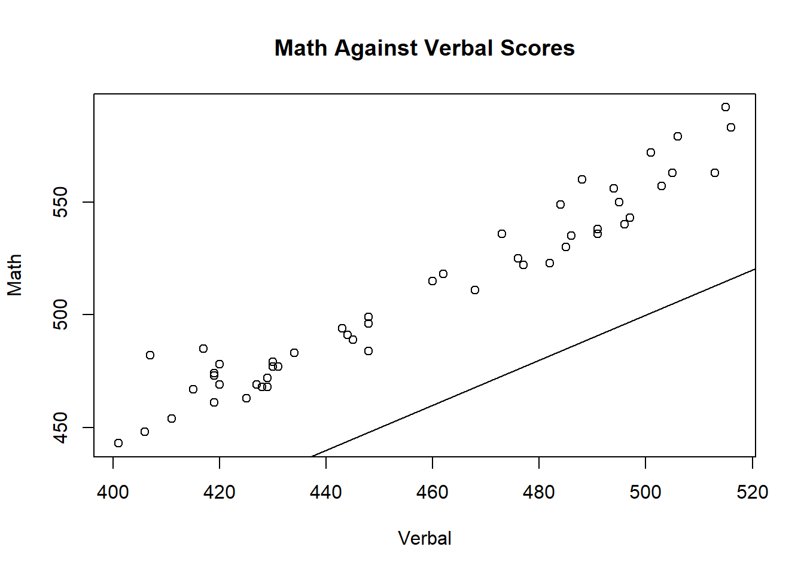
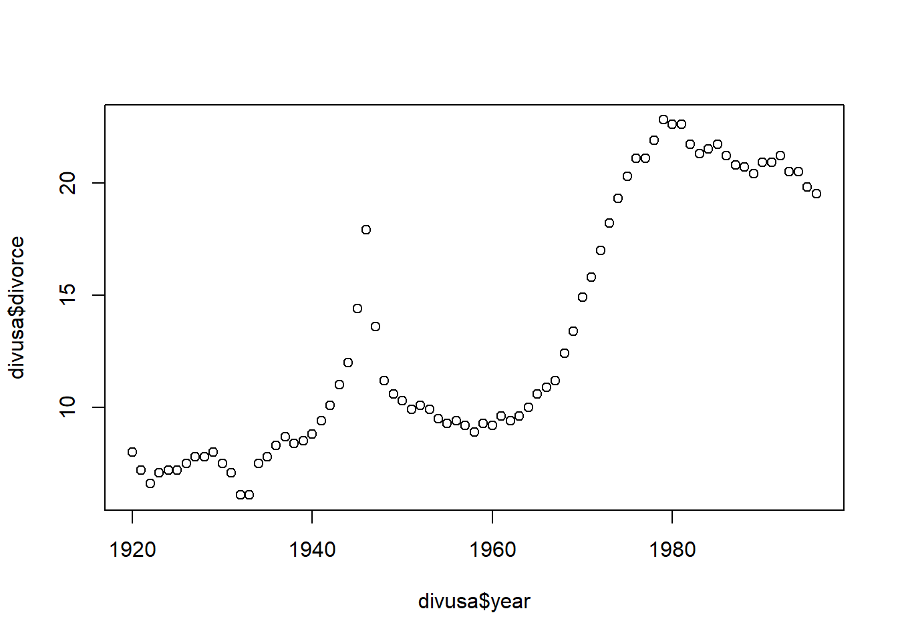

Code
library(ggplot2)library(ggplot2)data(teengamb, package = "faraway")head(teengamb) sex status income verbal gamble
1 1 51 2.00 8 0.0
2 1 28 2.50 8 0.0
3 1 37 2.00 6 0.0
4 1 28 7.00 4 7.3
5 1 65 2.00 8 19.6
6 1 61 3.47 6 0.1teengamb$sex = factor(teengamb$sex)
levels(teengamb$sex) = c("male", "female")
summary(teengamb$sex) male female
28 19 There are 28 males and 19 females.
# Base graphics
boxplot(
status ~ sex,
data = teengamb,
main = "Boxplot of Sexes",
xlab = "Sex",
ylab = "Count"
)
ggplot(data = teengamb, aes(x = sex, y = status)) + geom_boxplot()
Both methods differ only in appearance.
ggplot(data = teengamb, aes(x = sex, y = status)) + geom_point()
No. We see fewer points due to overplotting.
hist(x = teengamb$verbal, xlab = "Verbal Score")
The x-axis is difficult to interpret because the ticks marks align with the boundaries of the blocks, rather than being centred on them.
plot(table(teengamb$verbal), xlab = "Verbal Score", ylab = "Frequency")
Cleaner but the thin lines are non-standard way of visualising histogram.
barplot(table(teengamb$verbal), xlab = "Verbal Score", ylab = "Frequency")
The plot does not leave a gap for the verbal score of 3, even though this value is missing from the dataset.
ggplot(data = teengamb, aes(x = income, y = gamble, colour = sex)) +
geom_point(size = 5, alpha = 0.3)
ggplot(
data = teengamb,
aes(x = income, y = gamble, shape = sex, colour = sex)
) +
geom_point(size = 4, alpha = 0.3) +
facet_grid(~sex)
The faceted plot, because it is easier to distinguish the two sexes.
summary(teengamb) sex status income verbal gamble
male :28 Min. :18.00 Min. : 0.600 Min. : 1.00 Min. : 0.0
female:19 1st Qu.:28.00 1st Qu.: 2.000 1st Qu.: 6.00 1st Qu.: 1.1
Median :43.00 Median : 3.250 Median : 7.00 Median : 6.0
Mean :45.23 Mean : 4.642 Mean : 6.66 Mean : 19.3
3rd Qu.:61.50 3rd Qu.: 6.210 3rd Qu.: 8.00 3rd Qu.: 19.4
Max. :75.00 Max. :15.000 Max. :10.00 Max. :156.0 The gamble variable is the most skewed, because its minimum and lower quartile are much closer to the median than its upper quartile and maximum are.
data(uswages, package = "faraway")
head(uswages) wage educ exper race smsa ne mw so we pt
6085 771.60 18 18 0 1 1 0 0 0 0
23701 617.28 15 20 0 1 0 0 0 1 0
16208 957.83 16 9 0 1 0 0 1 0 0
2720 617.28 12 24 0 1 1 0 0 0 0
9723 902.18 14 12 0 1 0 1 0 0 0
22239 299.15 12 33 0 1 0 0 0 1 0usw = uswages[, c("wage", "ne", "mw", "we", "so")]
head(usw) wage ne mw we so
6085 771.60 1 0 0 0
23701 617.28 0 0 1 0
16208 957.83 0 0 0 1
2720 617.28 1 0 0 0
9723 902.18 0 1 0 0
22239 299.15 0 0 1 0sum(usw$ne * usw$wage) / sum(usw$ne)[1] 631.6591tapply(usw$wage, usw$ne, mean)["1"] 1
631.6591 all.equal(
sum(usw$ne * usw$wage) / sum(usw$ne),
unname(tapply(usw$wage, usw$ne, mean)["1"])
)[1] TRUEYes it does.
head(rowSums(usw[, -1])) 6085 23701 16208 2720 9723 22239
1 1 1 1 1 1 Each row should have exactly one 1 because these columns are indicators for mutually exclusive geographic regions (one region per individual).
usw$area = c("ne", "mw", "we", "so")[apply(usw[, -1], 1, which.max)]
head(usw) wage ne mw we so area
6085 771.60 1 0 0 0 ne
23701 617.28 0 0 1 0 we
16208 957.83 0 0 0 1 so
2720 617.28 1 0 0 0 ne
9723 902.18 0 1 0 0 mw
22239 299.15 0 0 1 0 weboxplot(formula = wage ~ area, data = usw)
The distributions are highly skewed.
boxplot(log(wage) ~ area, data = usw)
This is better because it is now easier to distinguish differences in the distributions.
data(prostate, package = "faraway")
head(prostate) lcavol lweight age lbph svi lcp gleason pgg45 lpsa
1 -0.5798185 2.7695 50 -1.386294 0 -1.38629 6 0 -0.43078
2 -0.9942523 3.3196 58 -1.386294 0 -1.38629 6 0 -0.16252
3 -0.5108256 2.6912 74 -1.386294 0 -1.38629 7 20 -0.16252
4 -1.2039728 3.2828 58 -1.386294 0 -1.38629 6 0 -0.16252
5 0.7514161 3.4324 62 -1.386294 0 -1.38629 6 0 0.37156
6 -1.0498221 3.2288 50 -1.386294 0 -1.38629 6 0 0.76547pairs(prostate[, 1:4])
lbph has many identical values.
cor(prostate[, 1:4]) lcavol lweight age lbph
lcavol 1.00000000 0.1941284 0.2249999 0.02734971
lweight 0.19412839 1.0000000 0.3075247 0.43493174
age 0.22499988 0.3075247 1.0000000 0.35018592
lbph 0.02734971 0.4349317 0.3501859 1.00000000There are four assumptions to check before performing a Pearson correlation test. - The two variables (the variables of interest) need to be using a continuous scale. - The two variables of interest should have a linear relationship, which you can check with a scatterplot. - There should be no spurious outliers. - The variables should be normally or near-to-normally distributed.
Given the non-normal distribution of lbph, its Pearson correlation coefficients are influenced by it, which can misrepresent the overall strength of the relationships to other variables.
nrow(prostate[prostate$lbph == min(prostate$lbph), ]) / nrow(prostate)[1] 0.44329944%.
exp(min(prostate$lbph))[1] 0.2500001The transformation \(log(x + 0.25)\) was employed to manage zero values in the bph variable. A constant of 0.25 was added to the raw data to prevent the mathematical singularity of \(log(0)\) as the data contained numerous instances where bph equal zero.
age_range <- range(prostate$age)
one_year_breaks <- seq(
from = age_range[1],
to = age_range[2] + 1,
by = 1
)
par(mfrow = c(1, 2))
hist(x = prostate$age, xlab = "Age")
hist(x = prostate$age, xlab = "Age", breaks = one_year_breaks)
A larger binwidth is chosen to emphasise the overall structure of the age distribution. This approach is appropriate as we are not concerned with the fine-grained detail in the data.
xtabs(~ gleason + svi, data = prostate) svi
gleason 0 1
6 35 0
7 37 19
8 1 0
9 3 2The most common combination is a Gleason score of 7 with no seminal vesicle invasion, which occurred in 37 of the 97 patients in the study.
data(sat, package = "faraway")
head(sat) expend ratio salary takers verbal math total
Alabama 4.405 17.2 31.144 8 491 538 1029
Alaska 8.963 17.6 47.951 47 445 489 934
Arizona 4.778 19.3 32.175 27 448 496 944
Arkansas 4.459 17.1 28.934 6 482 523 1005
California 4.992 24.0 41.078 45 417 485 902
Colorado 5.443 18.4 34.571 29 462 518 980table(sat$verbal + sat$math == sat$total)
TRUE
50 plot(
x = sat$verbal,
y = sat$math,
main = "Math Against Verbal Scores",
xlab = "Verbal",
ylab = "Math"
)
abline(0, 1) # y = x is equal to intercept = 0 and slope = 1
The distributions differ; students generally score higher on their maths tests than on their verbal tests.
There is a strong, positive, linear relationship between verbal and math scores. As students’ verbal scores increase, their math scores also tend to increase.
# hist(x = sat$verbal)
# plot(density(x = sat$verbal))plot(scale(sat$math) ~ scale(sat$verbal), xlab = "Verbal", ylab = "Math")
abline(a = 0, b = 1, lty = 2, lwd = 2, col = "blue")
text(
x = -1.0,
y = 1.5,
label = paste0("Correlation: ", round(cor(sat$verbal, sat$math), 3)),
cex = 1
)
q4d_lm_coef <- coef(lm(sat$math ~ sat$verbal))
plot(math ~ verbal, data = sat)
abline(lm(sat$math ~ sat$verbal), col = "red", lty = 2, lwd = 2)
text(
x = -0.5,
y = 1.25,
label = paste0("Intercept: ", round(q4d_lm_coef[1], 18)),
cex = 1
)
text(
x = -0.5,
y = 1.0,
label = paste0("Slope: ", round(q4d_lm_coef[2], 3)),
cex = 1
)
q4e_lm_coef <- coef(lm(sat$verbal ~ sat$math))
plot(math ~ verbal, data = sat)
abline(lm(sat$verbal ~ sat$math), col = "green", lty = 2)
text(
x = -0.5,
y = 1.25,
label = paste0("Intercept: ", round(q4e_lm_coef[1], 18)),
cex = 1
)
text(
x = -0.5,
y = 1.0,
label = paste0("Slope: ", round(q4e_lm_coef[2], 3)),
cex = 1
)
Remake the plot for clearer visual.
mean_verbal <- mean(sat$verbal)
mean_math <- mean(sat$math)
plot(
math ~ verbal,
data = sat,
main = "Intersection of Two Regression Lines",
xlab = "Verbal Score",
ylab = "Math Score",
pch = 19,
col = "gray"
)
lm_math_on_verbal <- lm(math ~ verbal, data = sat)
abline(lm_math_on_verbal, col = "red", lwd = 2)
lm_verbal_on_math <- lm(verbal ~ math, data = sat)
coeffs <- coef(lm_verbal_on_math)
intercept_for_plot <- -coeffs[1] / coeffs[2]
slope_for_plot <- 1 / coeffs[2]
# Now we can add this rearranged line to our plot
abline(a = intercept_for_plot, b = slope_for_plot, col = "blue", lwd = 2)
# This point should be exactly where the two lines cross
points(x = mean_verbal, y = mean_math, col = "purple", pch = 19, cex = 2.5)
text(
x = -1.0,
y = 1.25,
label = paste0("Intercept: ", round(q4d_lm_coef[1], 18)),
cex = 1
)
text(
x = -1.0,
y = 1.0,
label = paste0("Slope: ", round(q4d_lm_coef[2], 3)),
cex = 1
)
text(
x = 0.8,
y = -0.75,
label = paste0("Intercept [Exchanged]: ", round(q4e_lm_coef[1], 18)),
cex = 1
)
text(
x = 0.8,
y = -0.5,
label = paste0("Slope [Exchanged]: ", round(q4e_lm_coef[2], 3)),
cex = 1
)
Based on the equation \(\text{math} = 0.97 \cdot \text{verbal} + 3.41 \times 10^{-16}\)
print(q4d_lm_coef[2] * (mean(sat$verbal) + 20) + q4d_lm_coef[1])sat$verbal
530.9593 Based on the equation \(\text{verbal} = 0.97 \cdot \text{math} - 3.08 \times 10^{-16}\)
print(q4e_lm_coef[2] * (mean(sat$math) + 20) + q4e_lm_coef[1])sat$math
474.1179 print(q4d_lm_coef[2] * (mean(sat$verbal)) + q4d_lm_coef[1])sat$verbal
508.78 Without any information about the verbal score, we can only use the mean verbal score.
print(q4d_lm_coef[2] * (mean(sat$verbal)) + q4d_lm_coef[1])sat$verbal
508.78 data(divusa, package = "faraway")
head(divusa) year divorce unemployed femlab marriage birth military
1 1920 8.0 5.2 22.70 92.0 117.9 3.2247
2 1921 7.2 11.7 22.79 83.0 119.8 3.5614
3 1922 6.6 6.7 22.88 79.7 111.2 2.4553
4 1923 7.1 2.4 22.97 85.2 110.5 2.2065
5 1924 7.2 5.0 23.06 80.3 110.9 2.2889
6 1925 7.2 3.2 23.15 79.2 106.6 2.1735plot(x = divusa$year, y = divusa$divorce)
plot(x = divusa$year, y = divusa$divorce, type = "l")
Line plot is preferable for time ordered data.
plot(
y = divusa$divorce[-1],
x = divusa$divorce[-nrow(divusa)],
xlab = "Divorce rate in previous year",
ylab = "Divorce rate in current year"
)
abline(0, 1)
Prediction is possible; divorce rate in successive years is strongly correlated.
q5c_coef <- coef(lm(divorce ~ year, data = divusa))
q5c_coef (Intercept) year
-422.9752984 0.2228009 Based on the equation \(\text{divorce} = 0.22 \cdot \text{year} - 422.98\).
(100 - q5c_coef[1]) / q5c_coef[2](Intercept)
2347.277 After rearranging the equation, the year when divorce rate hits \(100\%\) is \(2347.277\). It is not a realistic prediction, as this extrapolation over time is sure to stop at some point.
ggplot(data = divusa, aes(x = femlab, y = divorce, colour = year)) +
geom_point()